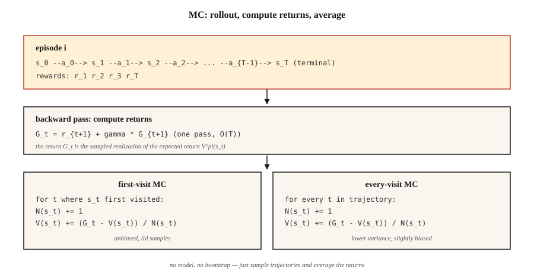

Monte Carlo Methods — Learning from Complete Episodes
Dynamic programming needs a model. Monte Carlo needs nothing but episodes. Run the policy, watch the returns, average them. The simplest idea in RL — and the one that unlocks everything downstream.
- Type
- Build
- Languages
- Python
- Prerequisites
- Phase 9 · 01 (MDPs), Phase 9 · 02 (Dynamic Programming)
- Time
- ~75 minutes
#The Problem
Dynamic programming is elegant, but it assumes you can query P(s' | s, a) for every state and action. Almost nothing in the real world works that way. A robot cannot analytically compute the distribution over camera pixels after a joint torque. A pricing algorithm cannot integrate over every possible customer reaction. An LLM cannot enumerate all possible continuations after a token.
You need a method that only needs the ability to sample from the environment. Run the policy. Get a trajectory s_0, a_0, r_1, s_1, a_1, r_2, …, s_T. Use it to estimate values. That is Monte Carlo.
The shift from DP to MC is philosophically important: we move from known model + exact backup to sampled rollouts + averaged return. The variance jumps, but the applicability explodes. Every RL algorithm after this lesson — TD, Q-learning, REINFORCE, PPO, GRPO — is a Monte Carlo estimator at heart, sometimes with bootstrapping layered on top.
#The Concept

The core idea, in one line: V^π(s) = E_π[G_t | s_t = s] ≈ (1/N) Σ_i G^{(i)}(s) where G^{(i)}(s) are observed returns following visits to s under policy π.
First-visit vs every-visit MC. Given an episode that visits state s multiple times, first-visit MC only counts the return from the first visit; every-visit MC counts all visits. Both are unbiased in the limit. First-visit is simpler to analyze (iid samples). Every-visit uses more data per episode and typically converges faster in practice.
Incremental mean. Instead of storing all returns, update the running average:
V_n(s) = V_{n-1}(s) + (1/n) [G_n - V_{n-1}(s)]
Reorganize: V_new = V_old + α · (target - V_old) with α = 1/n. Swap 1/n for a constant step-size α ∈ (0, 1) and you get a non-stationary MC estimator that tracks changes in π. That move is the entire jump from MC to TD to every modern RL algorithm.
Exploration is now a problem. DP touched every state by enumeration. MC only sees states the policy visits. If π is deterministic, whole regions of the state space never get sampled, and their value estimates stay at zero forever. Three fixes, in historical order:
- Exploring starts. Start each episode from a random (s, a) pair. Guarantees coverage; unrealistic in practice (you cannot "reset" a robot into an arbitrary state).
- ε-greedy. Act greedy w.r.t. current Q, but with probability
εpick a random action. All state-action pairs get sampled asymptotically. - Off-policy MC. Collect data under a behavior policy
μ, learn about target policyπvia importance sampling. High variance, but it's the bridge to replay-buffer methods like DQN.
Monte Carlo Control. Evaluate → improve → evaluate, just like policy iteration, but evaluation is sampling-based:
- Run
π, get an episode. - Update
Q(s, a)from observed returns. - Make
πε-greedy w.r.t.Q. - Repeat.
Converges to Q* and π* with probability 1 under mild conditions (every pair visited infinitely often, α satisfies Robbins-Monro).
#Build It
#Step 1: rollout → list of (s, a, r)
def rollout(env, policy, max_steps=200):
trajectory = []
s = env.reset()
for _ in range(max_steps):
a = policy(s)
s_next, r, done = env.step(s, a)
trajectory.append((s, a, r))
s = s_next
if done:
break
return trajectoryNo model, only env.reset() and env.step(s, a). Same interface as a gym environment but stripped down.
#Step 2: compute returns (reverse sweep)
def returns_from(trajectory, gamma):
returns = []
G = 0.0
for _, _, r in reversed(trajectory):
G = r + gamma * G
returns.append(G)
return list(reversed(returns))One pass, O(T). The backward recurrence G_t = r_{t+1} + γ G_{t+1} avoids re-summing.
#Step 3: first-visit MC evaluation
def mc_policy_evaluation(env, policy, episodes, gamma=0.99):
V = defaultdict(float)
counts = defaultdict(int)
for _ in range(episodes):
trajectory = rollout(env, policy)
returns = returns_from(trajectory, gamma)
seen = set()
for t, ((s, _, _), G) in enumerate(zip(trajectory, returns)):
if s in seen:
continue
seen.add(s)
counts[s] += 1
V[s] += (G - V[s]) / counts[s]
return VThree lines do the work: mark state as seen on first visit, increment count, update running mean.
#Step 4: ε-greedy MC control (on-policy)
def mc_control(env, episodes, gamma=0.99, epsilon=0.1):
Q = defaultdict(lambda: {a: 0.0 for a in ACTIONS})
counts = defaultdict(lambda: {a: 0 for a in ACTIONS})
def policy(s):
if random() < epsilon:
return choice(ACTIONS)
return max(Q[s], key=Q[s].get)
for _ in range(episodes):
trajectory = rollout(env, policy)
returns = returns_from(trajectory, gamma)
seen = set()
for (s, a, _), G in zip(trajectory, returns):
if (s, a) in seen:
continue
seen.add((s, a))
counts[s][a] += 1
Q[s][a] += (G - Q[s][a]) / counts[s][a]
return Q, policy#Step 5: compare to DP gold standard
Your MC estimate of V^π should agree with the DP result from Lesson 02 as episodes → ∞. In practice: 50,000 episodes on 4×4 GridWorld gets you within ~0.1 of the DP answer.
#Pitfalls
- Infinite episodes. MC requires episodes to terminate. If your policy can loop forever, cap
max_stepsand treat the cap as implicit failure. GridWorld with a random policy routinely times out — that is normal, just make sure you count it correctly. - Variance. MC uses full returns. On long episodes, variance is huge — one unlucky reward at the end shifts
V(s_0)by the same amount. TD methods (Lesson 04) cut this by bootstrapping. - State coverage. Greedy MC on a fresh Q with ties will only ever try one action. You must explore (ε-greedy, exploring starts, UCB).
- Non-stationary policies. If
πchanges (as in MC control), old returns are from a different policy. Constant-α MC handles this; sample-average MC does not. - Off-policy importance sampling. The weights
π(a|s)/μ(a|s)multiply across a trajectory. Variance explodes with horizon. Cap with per-decision weighted IS or switch to TD.
#Use It
The 2026 role of Monte Carlo methods:
| Use case | Why MC |
|---|---|
| Short-horizon games (blackjack, poker) | Episodes terminate naturally; returns are clean. |
| Offline evaluation of a logged policy | Average discounted returns over stored trajectories. |
| Monte Carlo Tree Search (AlphaZero) | MC rollouts from tree leaves guide selection. |
| LLM RL evaluation | Compute average reward over sampled completions for a given policy. |
| Baseline estimation in PPO | The advantage target A_t = G_t - V(s_t) uses an MC G_t. |
| Teaching RL | Simplest algorithm that actually works — strip bootstrapping to see the core. |
Modern deep-RL algorithms (PPO, SAC) interpolate between pure MC (full returns) and pure TD (one-step bootstrap) via n-step returns or GAE. Both endpoints are instances of the same estimator.
#Ship It
Save as outputs/skill-mc-evaluator.md:
---
name: mc-evaluator
description: Evaluate a policy via Monte Carlo rollouts and produce a convergence report with DP-comparison if available.
version: 1.0.0
phase: 9
lesson: 3
tags: [rl, monte-carlo, evaluation]
---
Given an environment (episodic, with reset+step API) and a policy, output:
1. Method. First-visit vs every-visit MC. Reason.
2. Episode budget. Target number, variance diagnostic, expected standard error.
3. Exploration plan. ε schedule (if needed) or exploring starts.
4. Gold-standard comparison. DP-optimal V* if tabular; otherwise a bound from a Q-learning / PPO baseline.
5. Termination check. Max-step cap, timeouts, handling of non-terminating trajectories.
Refuse to run MC on non-episodic tasks without a finite horizon cap. Refuse to report V^π estimates from fewer than 100 episodes per state for tabular tasks. Flag any policy with zero-variance actions as an exploration risk.#Exercises
- Easy. Implement first-visit MC evaluation of the uniform-random policy on 4×4 GridWorld. Run 10,000 episodes. Plot
V(0,0)as a function of episode count against the DP answer. - Medium. Implement ε-greedy MC control with
ε ∈ {0.01, 0.1, 0.3}. Compare mean return after 20,000 episodes. What does the curve look like? Where does the bias-variance tradeoff live? - Hard. Implement off-policy MC with importance sampling: collect data under uniform-random policy
μ, estimateV^πfor the deterministic optimal policyπ. Compare plain IS vs per-decision IS vs weighted IS. Which has lowest variance?
#Key Terms
| Term | What people say | What it actually means |
|---|---|---|
| Monte Carlo | "Random sampling" | Estimate expectations by averaging over iid samples from the distribution. |
Return G_t |
"Future reward" | Sum of discounted rewards from step t to episode end: Σ_{k≥0} γ^k r_{t+k+1}. |
| First-visit MC | "Count each state once" | Only the first visit in an episode contributes to the value estimate. |
| Every-visit MC | "Use all visits" | Every visit contributes; slightly biased but more sample-efficient. |
| ε-greedy | "Exploration noise" | Pick greedy action with prob 1-ε; random action with prob ε. |
| Importance sampling | "Correcting for sampling from the wrong distribution" | Reweight returns by π(a|s)/μ(a|s) products to estimate V^π from μ data. |
| On-policy | "Learn from my own data" | Target policy = behavior policy. Vanilla MC, PPO, SARSA. |
| Off-policy | "Learn from someone else's data" | Target policy ≠ behavior policy. Importance-sampled MC, Q-learning, DQN. |
#Further Reading
- Sutton & Barto (2018). Ch. 5 — Monte Carlo Methods — the canonical treatment.
- Singh & Sutton (1996). Reinforcement Learning with Replacing Eligibility Traces — first-visit vs every-visit analysis.
- Precup, Sutton, Singh (2000). Eligibility Traces for Off-Policy Policy Evaluation — off-policy MC and variance control.
- Mahmood et al. (2014). Weighted Importance Sampling for Off-Policy Learning — modern low-variance IS estimators.
- Tesauro (1995). TD-Gammon, A Self-Teaching Backgammon Program — the first large-scale empirical demonstration of MC/TD self-play converging to superhuman play; conceptual precursor to every lesson in the second half of this phase.
Nice. That's 6 minutes of Reinforcement Learning behind you.
Continue to Temporal Difference — Q-Learning & SARSA →